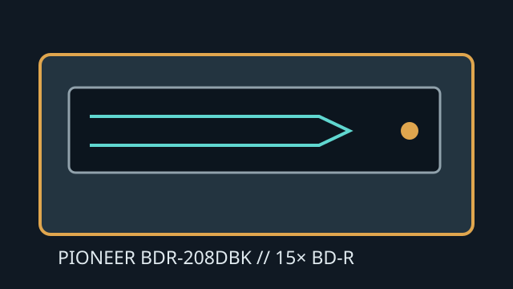

[ INTERNAL BLU-RAY WRITER ]
Pioneer BDR-208DBK
Internal 15× SATA Blu-ray/DVD/CD writer. It records standard BD-R/RE media; UHD playback and BDXL support are not inferred from this model designation.

IDENTIFICATION: Pioneer BDR-208DBK; use the precise SKU and firmware when consulting supported-media lists.
Documented specifications
| Media read/write formats | Reads BD-ROM, BD-R/RE, DVD-ROM, DVD±R/RW, DVD±R DL and CD-ROM/R/RW. Writes BD-R/RE, DVD±R/RW, DVD±R DL and CD-R/RW. Do not assign BDXL support without a matching manual. |
|---|---|
| Maximum speeds | BD-R single layer up to 15×; BD-R dual layer up to 14×; BD-R LTH up to 6×; BD-RE up to 2×. DVD±R up to 16×, DVD±R DL up to 8×; CD-R up to 40× and CD-RW up to 24×. BD-ROM read up to 12×. |
| Interface and physical bay | Internal 5.25-inch half-height tray-loading drive, SATA data interface and SATA power. Verify desktop case bay, screw positions, bezel and cable clearance. |
| Host and firmware compatibility | Needs a SATA host controller and OS support for an ATAPI optical drive. Blu-ray playback requires separate capable software/codecs. Use the firmware and media list for exact BDR-208DBK rather than another BDR-208 variant. |
Manufacturer and manual sources
- Pioneer BDR-208DBK operating instructionsModel-specific manual and operating specifications.
- Pioneer BDR-208DBK manualSecond manual copy with model identification.
- Pioneer — computer-drive support archiveManufacturer optical-drive support destination.